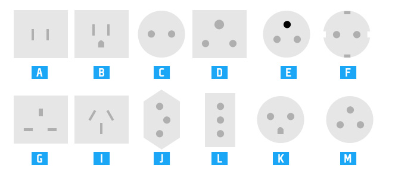

Cordoba hosts this year's Interaction South America (ISA).
Cordoba is a cultural and technological center in Argentina, highlighting it's Jesuit block, which was declared World Heritage by UNESCO. The city was 2006 American's Capital of Culture.
Here you will find all the relevant information to make your travel to Córdoba an enriching experience.
The information provided in this section was curated by experts at Viajo.org.
The official currency in Argentina is the peso, whose symbol is $ and can be displayed with the ISO 4217 code as ARS. Banknotes in circulation are: $ 2, $ 5, $ 10, $ 20, $ 50 and $ 100. The coins are: 5, 10, 25, 50 cents; $ 1 and $ 2.
You can check the official exchange rate against other foreign currencies on the website of Banco Nación: http://www.bna.com.ar/ or a currency exchange store. Due to limitations on the use of foreign currency in our country, there is a parallel market for foreign exchange which is illegal. That is why we want to warn you not to transact with people or companies working in this market, even if it may seem like a more attractive offer. Our recommendation is to make exchange money in banks or authorized entities which can be found around the San Martin Square in the center of the city of Cordoba.
If you need to have pesos upon arrival (to pay for a taxi for example) exchange at the airport. Remember to check the final price as each exchange company charges a commission.
Power Outlets in Argentina are of type I, although in some older installations you can find some type C, it's also common to find outlets / plugs that combined C + I.
The voltage used in our country is 220 V and 50 Hz frequency, almost all devices currently support it, but better safe than sorry before connecting any device please verify that it supports the voltage.
You can find more information about the different outlets and their respective voltages: http://www.viajo.org/mapa-de-tomacorrientes-en-el-mundo
There are 3 ways of public transport in the city of Cordoba:
Bus: Called locally as "colectivo", consist of corridors identified by color, each line on a corridor has a specific route and it is identified numerically.
Taxi:Yellow and work the same way as in almost any city in the world, you can stop them on the street.
Remis:It consists of green colored cars and their operation is similar to taxis, except that the only way is to get a ride is by phone call, that is because they are forbidden to pick up passengers in the street like taxis do.
Before going forward, bear in mind that in Córdoba either taxis nor remis accept credit cards as payment option you have to pay cash.
Taxi: $14,70 first 110m, after that $0,73 every 100 meters
Remis: $15,3 first 100m, after that $0,68 every 100 meters
Taxi: $16,15 first 110m, after that $0,80 every 100 meters
Remis: $16,8 first 100m, after that $0,75 every 100 meters
In our country it is not customary to tip the driver, so you should expect your change back and it is his responsibility to providing it. If the driver does not have any, they should round the fare for the benefit of the passenger.
There are two ways to get to and from Ingeniero Ambrosio Taravella International Airport: bus or taxi, the latter being the most recommended and safe. While the cost of a taxi to the airport can be up to 90% more expensive than a bus trip, we recommend that you taxi. The approximate cost of a trip from the center of Cordoba to the airport is ARS $120, and from the airport to the city center cost is approximately ARS $170. The difference resides in the cost of initial fare for trips beggining at the airport (ARS $58), for trips starting at the rest of the city expect to be charged by the day and night rates above.
If you need to know the approximate cost to and from the airport by reference to your hotel, you can get an estimated cost on the following website: http://www.miautobus.com
We recommend you to check this site before landing in Cordoba, that way you know how much money you need to exchange to pay for the taxi (remember they do not accept credit cards). Thus, you avoid changing more money than needed and then can do it as you need in the center of the city, in a place that will surely get you better values than at the airport.
It is always advisable to first check the status of flights, and be attentive to any cancellation or schedule change. You can check this information on the website of Aeropuertos Argentina 2000, responsible for administering Cordoba's airport.
State of arrivals and departures: AA 2000
As mentioned above, the transport in the city of Cordoba consists of taxis, remises and buses, the latter being the most popular choice when moving within the city. Here are the basic operation of the urban transport system of buses, from costs up to how to find our way on the web.
Remember you can use the website MiAutobus.com to check routes or rates to move within the city.
In Cordoba and in almost every major city in our country, urban transportation does not use cash when paying the ticket, instead a proximity card is used when hopping on the bus.
This card is commonly known as "Red Bus", as it takes its name from the supplier. You can get and charge your Red Bus card at the Central bus station (Terminal de Colectivos) stores B10 and C19, and at Airport Taravella (1st floor, "Open 25" store).
The Red Bus card costs ARS $25; to buy it you must charge it with the amount of money you want (without exceeding the technical limit of $ 300). You must pay cash, Red Bus card cannot be paid or charged by credit card. You can use it immediately without having to activate or enable it. The credit load builds up and does not expire.
When charging, the Municipality of Córdoba gives the benefit of an extra, so for example paying ARS $100, an ARS $110 will be available to use in travel. The cost of each trip per passages is ARS $7.15, but in reality and thanks to this 10% benefit, ends up being ARS $6.43.
If the balance on the card is not enough to pay a ticket, it is possible to "travel credit" up to 2 times with any rate; the amount used will be charged at the next charge.
Unlike other similar systems, the Red Bus card can be borrowed and used by other/s person/s, so if you do not want to keep it, you can pass it to another person. If you are coming come to the event in a group, you can buy a single card and use it for the whole group, thereby reducing costs.
Some city hostels sell and charge the Red Bus, you can find out before arriving if they provide this service.
A little about the culture of our city.
While it may not be the favorite of all people of Cordoba, the "Cuarteto" (quartet) is the popular musical style you will hear in most taxi's, radio or discos during your stay. Carlos "La Mona" Jimenez is one of its greatest references, among others.
As is to be expected in our country, "Asado" (barbecue) occupies a central place in our society, and Choripan (chorizo sandwich) along with Lomito (steak sandwich) are the typical sandwiches. If you want to treat yourself to eat a good Argentine asado, please consult local guides like Yelp or Gastronomic Tour for tips and prices.
http://www.yelp.com.ar/córdoba | Twitter: @yelpcba
http://www.circuitogastronomico.net/ | Twitter: @cgastronomico
It is a French style bread sandwich stuffed with roasted meat (pork and cow) sausage, accompanied by tomato, lettuce, mayonnaise and several sauces. The best place to try one is "Parque Sarmiento", a green space located next to the "Nueva Cordoba" neighborhood. To give you an idea how important choripán is, for the last 2 years the city has held the World Choripán Festival, under the auspices of the Municipality of Cordoba.
And if we talk about sandwiches, another classic is a steak one called Lomito. It's a sandwich of white bread stuffed with a piece of sliced beef tenderloin, lettuce, tomato, mayonnaise, fried egg, cheese, seasonings to taste and cooked ham. Always accompanied by french fries.
All the prevous can't be alone at a table, so surely you'll have them accompanied by a "Fernet", the preferred drink of Cordoba. It is prepared with fernet + ice + Coca Cola. Experts say the perfect mix is 5% ice + 30% fernet + 65% Coca Cola; those who want to venture a little further, can modify the percentages to include more fernet in the mix.
We recommend drinking with moderation and responsibly. And never drink if you are going to drive.
The classic souvenir of our lands is the "alfajor serrano", a candy made of two round wafers stuffed with milk caramel or fruit jams. The most popular course is the chocolate one filled with dulce de leche (milk caramel).
During November the climate in Cordoba is mostly warm and humid, with rain probability around 28%, which is typical at this time of year. The temperatures vary between 12°C and 29°C (53.6F - 84.2F), and the average humidity is 55%.
As for clothes, our recommendation is to travel with summer clothes and bring a light or rain jacket in case you need it.
You can check the weather at the following websites:
Weather Channel
InfoClima
The Tourism entity of the city has a series of self-guided tours through the main attractions of the city. You can get the guides here
Depending on the kind of tourism you prefer, you can choose different alternatives:
Pueblo Nuevo: Unavoidable visit in the list of all travelers who want to know the first working class neighborhood of Cordoba. This circuit goes through Belgrano Street in “Barrio Guemes”, the most bohemian of the city, ending at the renowned “Paseo de las pulgas”, an area in which we can find antiques, cakes and traditional foods; and also bars and trendy galleries.
Centro Histórico: Starting point to travel and see the city. From our “Cabildo” and neighboring Cathedral separated by the “Pasaje Santa Catalina”, witness of the last military dictatorship in our country. All this and a number of museums, vaults and basilicas compose this journey through the history of the city.
Córdoba de las Campanas: A journey through the historic culture of the city, formed by temples, churches and basilicas. A universe that is part of the Cordoba identity.
Córdoba Jesuítica: Walk the "Jesuit Block", declared a World Heritage Site by UNESCO, architectural wonder created by the founders of one of the most prestigious institutions of higher studies in the region, the oldest university in the country and fourth in America.
Nueva Córdoba: This is the busiest area in the city, a place where most young people who come to study in Cordoba choose to live. It has also witnessed the growth of the city in the late nineteenth century and early twentieth century, it is where you can find many museums and religious attractions.
These tours are a good starting point to explore the city of Córdoba.
Cordoba province is famous for its mountains; the following are some of the most sought cities visited by tourists throughout the year.
Villa General Belgrano
Villa General Belgrano is located in “Valle de Calamuchita”, has typical Bavarian architecture and is the largest German colony throughout Argentina. The first settlers were from that country as well as Swiss, Austrian and Italian. It hosts the Alpine Chocolate Festival, the Viennese Pastry party and Argentina Oktoberfest.
To visit Villa General Belgrano you can take a midrange bus or differential minibuses that depart with a frequency of 45 minutes from the old bus station. The companies that can take you there are: Buses Lep, Sierras de Calamuchita and Pájaro Blanco. Travel time is approximately 2 hours.
http://www.buseslep.com.ar
http://www.sierrasdecalamuchita.com
La Cumbrecita
Is a town whose houses are located on the banks of the trails through the forest of a small valley of the Sierras Grandes. At an altitude of 1450 meters, La Cumbrecita is ideal for a daytime ride. This pedestrian village has obtained balance between nature and human hands.
Access to the village is fully paved so it can be reached by car or bus. This is a pedestrian village, where the entry of vehicles is prohibited, reason why all tours have been designed for walking.
Important: In this town there are no gas stations, banks or ATMs, so you should take this into account before visiting.
From La Cumbrecita you can reach the resort Peñon del Águila, a perfect place to catch up with your adrenaline.
Peñon del Águila theme park: http://www.penondelaguila.com.ar
Alta Gracia
Continuing with the footprint left behind in our province by Jesuits, you can visit the “Museo Nacional Estancia Jesuítica de Alta Gracia” and subsequent “Casa del Virrey Liniers”. Another attraction in town is the Museo Casa de Ernesto "Che" Guevara, where the "Che" lived during his childhood and adolescence.
The city can be reached by car or bus, and is a 45 minutes travel from the capital.
Villa Carlos Paz
Carlos Paz is one of the favorite summer cities, not only for Cordoba but also for people all over the country. It is also one of the most important theatrical places of the country.
In summer it is known for its beaches along the San Antonio River and its theater. During the day or night, you can walk along the waterfront, beside the river and lake that links the city center with the bridges, the Paseo de los Patos, yacht clubs, spas, campgrounds, Center Convention and Sports.
In summer it is known for its beaches along the San Antonio River and its theater. During the day or night, you can walk along the waterfront, beside the river and lake that links the city center with the bridges, the Paseo de los Patos, yacht clubs, spas, campgrounds, Center Convention and Sports.
You can arrive by car or bus companies FONOBUS or Sarmiento.It is a 25 minutes travel from the capital.
| Hotel | Category | Price |
|---|---|---|
| NH URBANO | 3 (***) | $$$$ |
| MERIT | 3 (***) | $$$$ |
| NH PANORAMA | 4 (****) | $$$$ |
| SACHA MISTOL | $$$$ | |
| WINDSOR | 4 (****) | $$$$ |
| ON APART HOTEL DESIGN | $$$$ | |
| HOWARD JOHNSON CAÑADA | 4 (****) | $$$$ |
| AMERIAN | 4 (****) | $$$$ |
| AZUR REAL | BOUTIQUE | $$$$ |
| YRIGOYEN 111 | $$$$ |